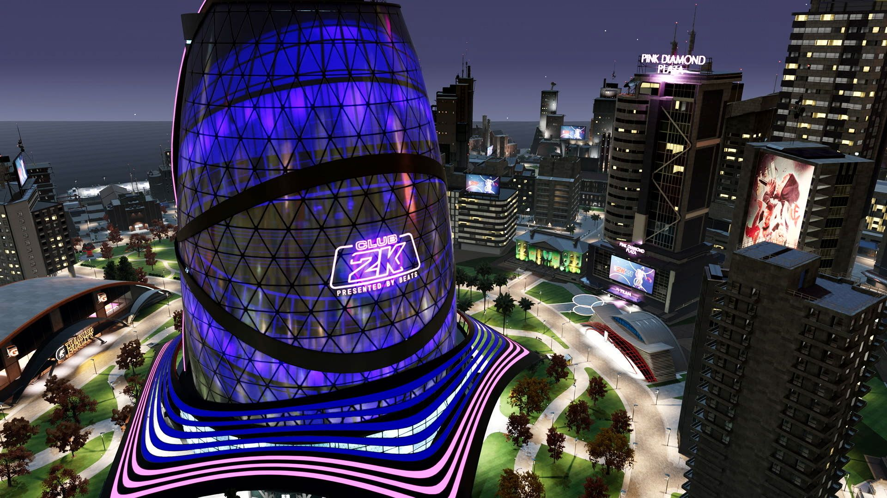
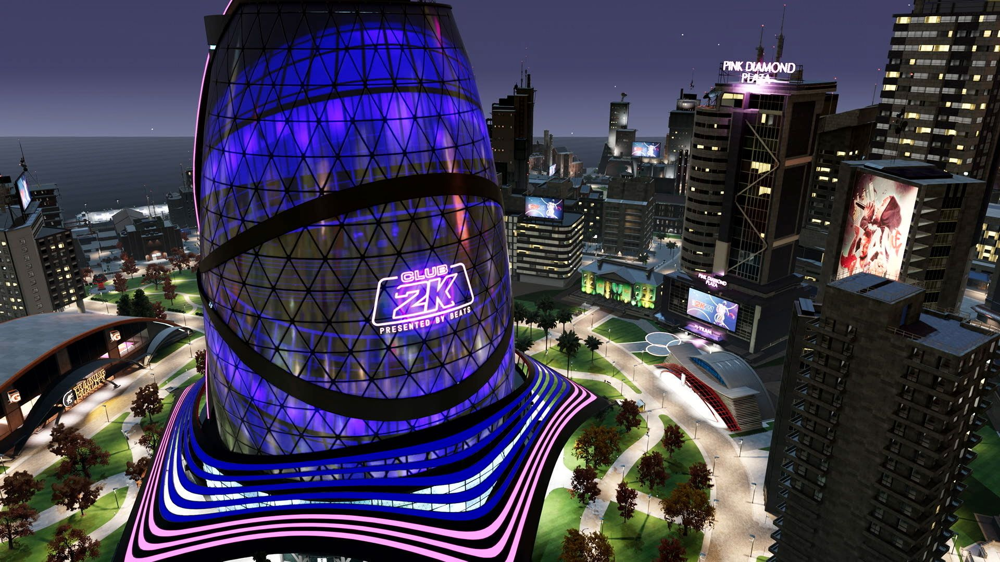

The City
Le traditionnel quartier se transforme en ville, que vous integrerez apres etre monte en grade Pro sur les Park d'une zone portuaire. Une fois citadin, on constate que la ville est gigantesque, et que certains PNJ vous donnent desormais des quetes pour obtenir des VC ou bonus en tout genre. Ajout pour les nostalgiques de Rivet City, Sunset Beach et Old Town, les affiliations sont de retour via 4 quartiers. Symboles de territoires aux couleurs differentes, on integre un clan une fois arrive en ville.
Pour le reste, c'est un quartier classique grandeur XXL au final, assez vide, artificiel, peu anime avec les boutiques habituelles, zone d'entrainement Gatorade, REC ou Pro-AM, la tour centrale accueillant les competitions evenementielles.

 
